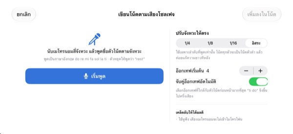
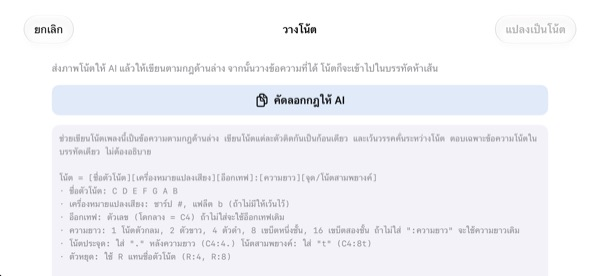

เลิกนับในหัว
แล้วฟังให้ชัด
คัดสองห้องที่ทำให้สะดุดลงบรรทัดห้าเส้นแล้วแตะเล่น หลังนับนำหนึ่งห้อง แอปจะเล่นตามเมโทรนอมด้วยจังหวะและระดับเสียงตามที่เขียนไว้
ทุกฟีเจอร์ใช้ฟรี รองรับ iPhone และ iPad

ลองเขียนแล้วฟังดู
กดค้างบนบรรทัดแล้วเลื่อนขึ้นลงเพื่อเปลี่ยนเสียง ปล่อยนิ้วเพื่อวางโน้ต กดเล่นเพื่อฟังหลังนับนำหนึ่งห้อง มีเสียงออกมา กรุณาตรวจระดับเสียงก่อน
นับจังหวะไปมาแล้วหลงอีกแล้วใช่ไหม
เขบ็ตหนึ่งชั้นประจุดตามด้วยเขบ็ตสองชั้น แล้วต่อด้วยโน้ตสามพยางค์ เคาะนับไปเรื่อย ๆ ก็เริ่มคลาด คืนก่อนซ้อมคอรัสก็มักไม่มีเปียโนอยู่ใกล้ตัว StaffSinger ให้คุณคัดสองห้องนั้นลงบรรทัด แล้วฟังจังหวะและระดับเสียงที่ถูกต้องได้ทันที
ได้ยินจังหวะและระดับเสียงตามที่เขียน
หลังนับนำหนึ่งห้อง แอปจะเล่นตามเสียงคลิกของเมโทรนอม และไฮไลต์โน้ตที่กำลังดังเป็นสีส้ม ตั้งความเร็วได้ตั้งแต่ 40 ถึง 200 BPM และเลือกอัตราจังหวะ 4/4, 3/4, 2/4, 6/8, 2/2 หรือ 3/8
วางโน้ตซ้อนในจังหวะเดียวกันจะกลายเป็นคอร์ดที่ดังพร้อมกัน และเขียนแยกได้สูงสุดสามแนวเสียง เปลี่ยนกุญแจซอล กุญแจอัลโต กุญแจฟา และเครื่องหมายประจำกุญแจเสียงได้

พูดชื่อโน้ต แล้วกลายเป็นโน้ต
หลังเมโทรนอมนับสี่จังหวะ ให้พูด do re mi ตามจังหวะ โน้ตจะลงบรรทัดทันที พูดตรงจังหวะแล้วแอปจะจับความยาวโน้ตเป็นตัวดำ เขบ็ตหนึ่งชั้น หรือเขบ็ตสองชั้นให้ด้วย ตรงที่หยุดให้พูด rest
พูดชื่อโน้ตด้วยสำเนียงภาษาอังกฤษ เสียงพูดถูกแปลงในเครื่องเท่านั้นและไม่ถูกเก็บไว้

ส่งรูปโน้ตให้ AI แล้ววางผลลัพธ์
แตะ คัดลอกกฎให้ AI ส่งให้ AI พร้อมรูปโน้ตเพลง แล้ววางข้อความที่ได้กลับมา บรรทัดห้าเส้นจะเติมให้เอง รูปแบบดูได้จากตารางด้านล่าง
ถ่ายรูปโน้ตกระดาษไว้บนจอ แล้วดูไปคัดไปก็ได้

เริ่มได้ในสามขั้นตอน
- 1
เลือกห้องที่สะดุด
เปิดแอปแล้วจะเห็นบรรทัดว่างสองห้อง
- 2
เขียนโน้ต
กดบนบรรทัดหรือเล่นคีย์บอร์ดเปียโน
- 3
แตะเล่น
นับนำแล้วเล่นไปพร้อมเมโทรนอม
รูปแบบข้อความสำหรับวาง
- C4:4
- โน้ต C ในอ็อกเทฟ 4 ตัวดำ (โดกลางคือ C4)
- D:8
- ไม่ใส่อ็อกเทฟ จะใช้อ็อกเทฟเดิมต่อ
- F#4:8 · Bb4:4
- ชาร์ปใช้ # แฟลตใช้ b
- E4
- ไม่ใส่ :ความยาว จะใช้ความยาวเดิมต่อ
- :1 · :2 · :4 · :8 · :16
- ตัวกลม ตัวขาว ตัวดำ เขบ็ตหนึ่งชั้น เขบ็ตสองชั้น
- C4:4.
- โน้ตประจุด
- C4:8t
- โน้ตสามพยางค์
- R:4 · R:8
- ตัวหยุด
แตะคัดลอกกฎให้ AI ในแอป จะได้คำอธิบายรูปแบบนี้ไปทั้งชุด เว้นวรรคระหว่างโน้ตแต่ละตัว
ทุกฟีเจอร์ใช้ฟรี
ฟรี
- เขียนบนบรรทัดและคีย์บอร์ดเปียโนสองอ็อกเทฟ
- เล่นพร้อมนับนำและเมโทรนอม
- คอร์ดและสามแนวเสียง
- เครื่องหมายประจำกุญแจเสียงและกุญแจสามแบบ
- พูดชื่อโน้ตเพื่อใส่โน้ต
- วางข้อความและรูปอ้างอิง
สนับสนุนผู้พัฒนา
- ส่งทิปเล็ก ๆ ได้จากการตั้งค่า
- ส่งทิปแล้วไม่มีฟีเจอร์ใดปลดล็อกเพิ่ม
ไม่ใช่การสมัครสมาชิก จ่ายครั้งเดียวในแต่ละครั้งที่ส่ง
ไม่มีโฆษณา และไม่ต้องสมัครบัญชี
คำถามที่พบบ่อย
ใส่โน้ตอย่างไร
เลือกความยาวโน้ตในแถบเครื่องมือก่อน แล้วกดบนบรรทัดตรงระดับเสียงที่ต้องการ ระหว่างกดจะได้ยินเสียงนั้น ปล่อยนิ้วแล้วโน้ตจะถูกใส่ แตะปุ่มคีย์บอร์ดเพื่อใส่ด้วยคีย์บอร์ดเปียโนสองอ็อกเทฟก็ได้
ทำคอร์ดอย่างไร
เปิดปุ่มคอร์ดในแถบเครื่องมือแล้วใส่โน้ต โน้ตจะซ้อนบนตัวที่เลือกและดังพร้อมกัน
อยากแก้โน้ตที่ใส่ไปแล้ว
ลากโน้ตขึ้นลงเพื่อเปลี่ยนระดับเสียง ลากซ้ายขวาเพื่อย้ายจังหวะ เมื่อเลือกโน้ตแล้ว ใช้ปุ่ม ♯ ♭ เลื่อนทีละครึ่งเสียง และปุ่ม 8va เลื่อนทีละอ็อกเทฟ
เปลี่ยนความเร็วและอัตราจังหวะได้ที่ไหน
ในการตั้งค่า รวมถึงกุญแจและเครื่องหมายประจำกุญแจเสียง เปิดปิดเมโทรนอมและการนับนำได้ที่นี่ด้วย
ไม่มีเสียง
ตรวจโหมดเงียบและระดับเสียงสื่อ ถ้าไม่ได้ยินเฉพาะเมโทรนอม ให้ดูว่าเปิดเมโทรนอมไว้ในตัวช่วยการเล่นของการตั้งค่าแล้ว
พูดชื่อโน้ตแล้วไม่ค่อยตรง
ใช้หูฟังเพื่อไม่ให้เสียงเมโทรนอมเข้าไมค์ พูดทีละตัวให้ชัดและตรงจังหวะ ถ้าได้โน้ตผิด ลากแก้ได้เลย
ทำไมต้องใช้กล้อง
ใช้เพื่อถ่ายโน้ตกระดาษมาแสดงบนจอเป็นรูปอ้างอิงเท่านั้น รูปไม่ออกจากเครื่อง ถ้าไม่อนุญาตกล้องก็เลือกรูปจากคลังรูปภาพได้
ใช้กับอุปกรณ์ใดได้บ้าง
iPhone และ iPad ที่ใช้ iOS 17 ขึ้นไป หน้าจอออกแบบสำหรับแนวนอน
โน้ตหรือเสียงของฉันถูกส่งไปที่ไหนไหม
ไม่ โน้ต รูป และเสียงอยู่ในเครื่องเท่านั้น และใช้งานได้โดยไม่ต้องต่ออินเทอร์เน็ต มีเพียงสถิติการใช้งานแบบไม่ระบุตัวตนและรายงานข้อขัดข้องที่ส่งไปยัง iCloud เพื่อใช้ปรับปรุงแอป
ติดต่อผู้พัฒนาได้อย่างไร
ส่งอีเมลมาที่ leeo@kakao.com ปกติจะตอบภายใน 2 ถึง 3 วันทำการ แจ้งปัญหาหรือเสนอฟีเจอร์ผ่าน GitHub ที่ M1zz/StaffSinger ได้เช่นกัน
มีคำถามหรือข้อเสนอแนะ เขียนมาที่ leeo@kakao.com